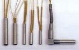
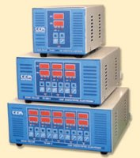

|
2.2.Isýtýcýlar (Daðýtýcý ve meme rezistansý):
Sýcak
yolluk sisteminde kullanýlan ýsýtýcýlarý
a-)
Spiral rezistanslar,
b-) Fiþek rezistanslar ve
c-) Flexible ýsýtýcýlar
olarak
üç grup da inceleyebiliriz.
a-)
Spiral rezistanslar:
Sýcak
yolluk memesinin üzerinde kullanýlan (Þekil 1-16) ve plastiði
ýsýtmada kullanýlan ýsýtýcýdýr. Spiral rezistanslar thermocoupleli
ve thermocouplesiz olarak silindirik, kare ve dikdörtgen tel
kesitlerinde ihtiyaca göre çeþitli çap, boy ve wattlar da
üretilebilir. Plastik enjeksiyon kalýplarýn da en çok daha
fazla temas yüzeyine sahip olmasý ve iyi bir ýsý iletimi gerçekleþtirebilmesi
nedeniyle dikdörtgen spiral rezistanslar daha fazla tercih
edilir (5).
b-) Fiþek rezistanslar:
Seçilen
manifold tipine göre çeþitli çap, boy ve wattlar da üretilen
fiþek rezistanslar sýcak yolluk daðýtýcýsýný ýsýtmak amacý
ile kullanýlýr (Þekil 1-22). Fiþek rezistanslardan en iyi
þekilde verim alabilmemiz için fiþek rezistanslarýn manifolda
takýlacaðý yuva pisliklerden arýndýrýlmýþ ve H7 toleransýnda
iþlenmiþ olmalýdýr (5).
c-) Flexible ýsýtýcýlar:
Fiþek rezistanslara alternatif olarak sýcak yolluk daðýtýcýlarýnýn
ýsýtýlmasýnda kullanýlýr. Homojen bir ýsýtma yaptýðýndan daha
avantajlýdýr. Montajý ve bozulma sonrasý deðiþtirmesi fiþek
rezistanslara göre daha zordur. Manifold formuna göre flexible
ýsýtýcýlarý kývýrýrken belirli radyüslere uyulmalýdýr. Flexible
ýsýtýcýlar keskin köþeli olarak kývrýlmamalýdýr (5).

Þekil 4. Daðýtýcý ve meme ýsýtýcýlarý
2.3.Sýcaklýk
kontrol cihazý:
Sýcak
yolluk sistemlerinde ýsý kontrolünü saðlayan kontrol sistemidir.
Sýcak yolluk kontrol üniteleri mutlaka PID kontrollü, toplam
rezistans wattýný kaldýracak güçte ve FeCuNi termocuople uygun
olmalýdýr. Mümkün olduðunca ýsý kontrol sisteminin hassasiyeti
±1° olmalýdýr. Ayrýca sýcaklýk kontrol cihazý ýsýyý aðýr aðýr
yükseltmelidir. Çünkü sýcak yolluk sistemi de kullanýlan rezistanslarýnýn
içerisinde yalýtým malzemesi olarak kullanýlan magnezyum oksit
tozu, üzerine nem çekme özelliði taþýyan bir malzemedir. Özellikle
soðuk havalarda magnezyum oksit tozunun özelliðinden dolayý
rezistanslarýn üzerinde nem tanecikleri birikir. Ani bir ýsýtma
durumunda bu nem tanecikleri aniden buharlaþarak rezistanslarýn
üzerine basýnç uygular bu oluþan basýnçta rezistanslarýn ömrünü
%50 oranýnda azaltýr. Ýdeal bir ýsý kontrolü saðlamak için
her göze bir ýsý kontrol sistemi kullanýlmalýdýr (Þekil 5)
(5).

Þekil 5. Çeþitli ýsý kontrol sistemi parçalarý
2.4.Sýcak
yolluk memesi:
Sýcak
yolluk sisteminin en önemli elemaný olan sýcak yolluk memesi
düz uçlu ve iðne uçlu olarak iki tipte bulunur (Þekil 6).
Düz uçlu memelerin montajý iðne uçlu memelere göre daha kolaydýr.
Kolay olmasýna raðmen baský sonrasý parça üzerinde itici izine
benzer izler býrakýr. Ýðne uçlu memede ise baský sonrasý parçada
nokta þeklinde daha estetik bir iz kalýr. Fakat týkanmasý
durumunda memeyi sökmek gerektiði gibi montajý daha zor ve
hassasiyet gerektirir (5).
Þekil 6. Sýcak yolluk sisteminde kullanýlan memelerin basit
görünümleri
2.5.Thermocoupler
(Sýcaklýk kontrol elemaný):
Sýcak
yolluk memelerinde ve manifoldlarda ýsýyý ölçmek için kullanýlýr.
Bir tanesi Demir (Fe) diðeri, Nikel Bakýr (Ni-Cu) karýþýmýndan
oluþan iki kablodan oluþur. Bu iki kablonun ucu termo elemanýn
uç noktasýnda birleþir. Thermocouple ýsý kontrol cihazýna
sinyal gönderir ve cihaz bu sinyale göre manifold ve memelerin
ýsýný gösterir. Memelerin ve manifoldlarýn ýsýsýný kontrol
edebilmek için mutlaka thermocoupler kullanýlmalýdýr (Þekil
7) (5).
Þekil 7.Thermocouple örnekleri
3.
SICAK YOLLUK SÝSTEMÝNÝN ÝHTÝYAÇLARI
Plastik
enjeksiyon sistemlerinde sýcak yolluk sistemi kullanýmý diðer
yolluk sistemine ek olarak bir çok detay ve hassasiyet gerektirmektedir.
Bunlarý sýrasý ile inceleyelim.
3.1.
Saf (temiz) ham madde kullanýmý:
Sýcak
yolluk sistemi kullanarak tasarlanmýþ olan plastik hacim kalýplarýnda
kullanýlacak ham malzeme yabancý maddelerden arýndýrýlmýþ,
nemden uzak olmalýdýr. Bu özellikler baský kalitesini artýrdýðý
gibi sýcak yolluk sisteminin de ömrünü artýrýr (6).
3.2.
Hassas sýcaklýk kontrolü:
Sýcak
yolluk sisteminde sabit sýcaklýðýn saðlanmasý gerekmektedir.
(Örneðin: PID kontrollü) Ýyi bir sýcaklýk kontrol cihazý, yüksek
reaksiyon hýzýna sahip, otomatik parametre düzeltme, ýsýtýcýnýn
yumuþak harekete geçmesi (soft start özelliði) ve doðru yapýlmýþ
kablo baðlantý düzeneði gibi özelliklere sahip olmasý gerekir.
Enjeksiyon sýrasýnda yolluk giriþindeki oluþabilecek, sýcaklýk
dalgalanmalarýna izin vermemek için sýcaklýk kontrol cihazlarýnýn
hýzlý ve hassas bir geri besleme özelliðine sahip olmasý gerekir
(6).
3.3.
Ýyi bir kalýp tasarýmý:
Sýcak
yolluklu kalýplarda kullanýlan manifold plakasýnýn sertliði
35-42 HRc, ve yolluk giriþ bölgesindeki kalýp çeliðinin kalitesi
en az 1, 2344 ve 48-50 HRc olmalýdýr (3).
Sýcak
yolluk kullanýlarak yapýlan kalýp tasarýmlarýnda soðutucu
kanalarýn konumu sýcak yoluk sistemi göz önüne alýnarak yapýlmalýdýr.
Memelerin soðutulmasý üst kýsýmdan deðil memelerin uç kýsýmdan
yapýlmalýdýr (Þekil 8) (6).
Þekil 8. Memelerin soðutulmasý için uygun kanal konumlarý
(6)
Ayrýca
sýcak yolluk sistemleri kullanýlan kalýplarda ölçü ve toleranslar,
hava boþluklarý, sýcak yolluk sisteminin montajýnda kullanýlacak
vida tipi, boyutu, adedi, montaj yöntemi, sýkma torklarý tamamen
sýcak yolluk üreticisinin tasarýmýna uygun ve önerdiði þekilde
olmalýdýr. Bu þekilde yapýlmýþ bir tasarým kaliteyi artýracaktýr
(3).
|